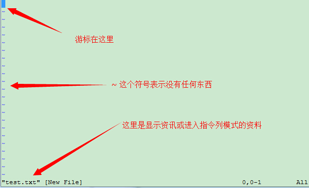
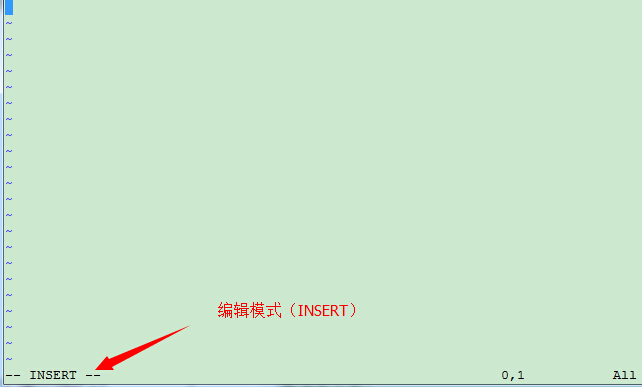
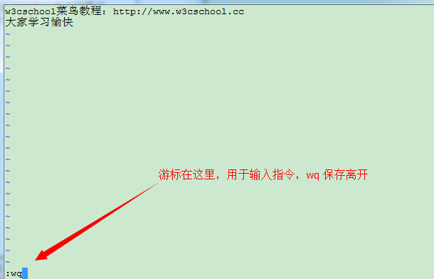

Linux vi/vim
所有的 Unix Like 系统都会内建 __ 文书编辑器，其他的文书编辑器则不一定会存在。
但是目前我们使用比较多的是 vim 编辑器。
vim 具有程序编辑的能力，可以主动的以字体颜色辨别语法的正确性，方便程序设计。
相关文章： 史上最全Vim快捷键键位图 — 入门到进阶
什么是 vim？
Vim是从 vi 发展出来的一个文本编辑器。代码补完、编译及错误跳转等方便编程的功能特别丰富，在程序员中被广泛使用。
简单的来说， vi 是老式的字处理器，不过功能已经很齐全了，但是还是有可以进步的地方。 vim ___________________。 _ vim 的官方网站 (http://www.vim.org) 自己也说 ___ 是一个程序开发工具而不是文字处理软件。
vim 键盘图：

vi/vim 的使用
基本上 vi/vim 共分为三种模式，分别是一般模式、编辑模式与指令列命令模式。 这三种模式的作用分别是：
- 一般模式：
以 vi 打开一个档案就直接进入一般模式了(这是默认的模式)。在这个模式中， 你可以使用『上下左右』按键来移动光标，你可以使用『删除字符』或『删除整行』来处理档案内容， 也可以使用『复制、贴上』来处理你的文件数据。 - 编辑模式：
在一般模式中可以进行删除、复制、贴上等等的动作，但是却无法编辑文件内容的！ 要等到你按下『i, I, o, O, a, _, r, R』等任何一个字母之后才会进入编辑模式。注意了！通常在 Linux 中，按下这些按键时，在画面的左下方会出现『INSERT 或 REPLACE 』___，_________。___________， ______『___』____________。 - 指令列命令模式：
在一般模式当中，输入『 : / ? 』三个中的任何一个按钮，就可以将光标移动到最底下那一行。在这个模式当中， 可以提供你『搜寻资料』的动作，而读取、存盘、大量取代字符、离开 vi 、___________________！
简单的说，我们可以将这三个模式想成底下的图标来表示：

vi/vim 使用实例
使用 vi/vim 进入一般模式
如果你想要使用 vi 来建立一个名为 test.txt ____，______：
[root@www ~]# vi test.txt
直接输入 vi 文件名 就能够进入 vi 的一般模式了。请注意，记得 vi _________，_________！
按下 i 进入编辑模式，开始编辑文字
在一般模式之中，只要按下 i, o, a _____________！
在编辑模式当中，你可以发现在左下角状态栏中会出现 –INSERT- 的字样，那就是可以输入任意字符的提示。
这个时候，键盘上除了 [Esc] 这个按键之外，其他的按键都可以视作为一般的输入按钮了，所以你可以进行任何的编辑。
按下 [ESC] 按钮回到一般模式
好了，假设我已经按照上面的样式给他编辑完毕了，那么应该要如何退出呢？是的！没错！就是给他按下 [Esc] 这个按钮即可！马上你就会发现画面左下角的 – ______ – 不见了！
在一般模式中按下 :wq 储存后离开 vi
OK，我们要存档了，存盘并离开的指令很简单，输入『:wq』即可保存离开！
OK! 这样我们就成功创建了一个 test.txt 的文件。是不是很简单。
vi/vim 按键说明
除了上面简易范例的 i, [Esc], :wq __，__ vim 还有非常多的按键可以使用。
第一部份：一般模式可用的按钮说明，光标移动、复制贴上、搜寻取代等
| 移动光标的方法 | |
|---|---|
| h 或 向左箭头键(←) | 光标向左移动一个字符 |
| j 或 向下箭头键(↓) | 光标向下移动一个字符 |
| k 或 向上箭头键(↑) | 光标向上移动一个字符 |
| l 或 向右箭头键(→) | 光标向右移动一个字符 |
| 如果你将右手放在键盘上的话，你会发现 hjkl 是排列在一起的，因此可以使用这四个按钮来移动光标。 如果想要进行多次移动的话，例如向下移动 30 _，____ "30j" 或 "30↓" 的组合按键， 亦即加上想要进行的次数(数字)后，按下动作即可！ | |
| [Ctrl] + [f] | 屏幕『向下』移动一页，相当于 [Page Down]按键 (常用) |
| [Ctrl] + [b] | 屏幕『向上』移动一页，相当于 [Page Up] 按键 (常用) |
| [Ctrl] + [d] | 屏幕『向下』移动半页 |
| [Ctrl] + [u] | 屏幕『向上』移动半页 |
| + | 光标移动到非空格符的下一列 |
| - | 光标移动到非空格符的上一列 |
| n<space> | 那个 n 表示『数字』，例如 20 。__________，___________ n 个字符。例如 20<space> 则光标会向后面移动 20 _____。 |
| 0 或功能键[Home] | 这是数字『 0 』：移动到这一行的最前面字符处 (常用) |
| $ 或功能键[End] | 移动到这一行的最后面字符处(常用) |
| H | 光标移动到这个屏幕的最上方那一行的第一个字符 |
| M | 光标移动到这个屏幕的中央那一行的第一个字符 |
| L | 光标移动到这个屏幕的最下方那一行的第一个字符 |
| G | 移动到这个档案的最后一行(常用) |
| nG | n 为数字。移动到这个档案的第 n 行。例如 20_ 则会移动到这个档案的第 20 行(可配合 :set __) |
| gg | 移动到这个档案的第一行，相当于 1G 啊！ (常用) |
| n<Enter> | n 为数字。光标向下移动 n 行(常用) |
| 搜寻与取代 | |
| /word | 向光标之下寻找一个名称为 word 的字符串。例如要在档案内搜寻 vbird _____，___ /vbird 即可！ (常用) |
| ?word | 向光标之上寻找一个字符串名称为 word 的字符串。 |
| n | 这个 n 是英文按键。代表重复前一个搜寻的动作。举例来说， 如果刚刚我们执行 /vbird _____ vbird 这个字符串，则按下 n 后，会向下继续搜寻下一个名称为 _____ 的字符串。如果是执行 ?vbird 的话，那么按下 n ___________ vbird 的字符串！ |
| N | 这个 N 是英文按键。与 n ____，_『__』_________。 __ /vbird 后，按下 N 则表示『向上』搜寻 _____ 。 |
| 使用 /word 配合 n _ N 是非常有帮助的！可以让你重复的找到一些你搜寻的关键词！ | |
| :n1,n2s/word1/word2/g | n1 与 n2 为数字。在第 _1 与 n2 行之间寻找 word1 _____，_________
____2 ！举例来说，在 100 到 200 _____ vbird 并取代为 VBIRD 则： 『:100,200s/vbird/VBIRD/g』。(常用) |
| :1,$s/word1/word2/g | 从第一行到最后一行寻找 word1 字符串，并将该字符串取代为 word2 ！(常用) |
| :1,$s/word1/word2/gc | 从第一行到最后一行寻找 word1 字符串，并将该字符串取代为 word2 ！且在取代前显示提示字符给用户确认 (_______) ______！(__) |
| 删除、复制与贴上 | |
| x, X | 在一行字当中，x 为向后删除一个字符 (相当于 [del] __)， X 为向前删除一个字符(相当于 [backspace] 亦即是退格键) (常用) |
| nx | n 为数字，连续向后删除 n 个字符。举例来说，我要连续删除 10 个字符， 『10x』。 |
| dd | 删除游标所在的那一整行(常用) |
| ndd | n 为数字。删除光标所在的向下 n 列，例如 20__ 则是删除 20 列 (常用) |
| d1G | 删除光标所在到第一行的所有数据 |
| dG | 删除光标所在到最后一行的所有数据 |
| d$ | 删除游标所在处，到该行的最后一个字符 |
| d0 | 那个是数字的 0 ，删除游标所在处，到该行的最前面一个字符 |
| yy | 复制游标所在的那一行(常用) |
| nyy | n 为数字。复制光标所在的向下 n 列，例如 20__ 则是复制 20 列(常用) |
| y1G | 复制游标所在列到第一列的所有数据 |
| yG | 复制游标所在列到最后一列的所有数据 |
| y0 | 复制光标所在的那个字符到该行行首的所有数据 |
| y$ | 复制光标所在的那个字符到该行行尾的所有数据 |
| p, P | p 为将已复制的数据在光标下一行贴上，P 则为贴在游标上一行！ 举例来说，我目前光标在第 20 _，______ 10 行数据。则按下 p 后， 那 10 行数据会贴在原本的 20 行之后，亦即由 21 ____。______ P 呢？ 那么原本的第 20 行会被推到变成 30 行。 (常用) |
| J | 将光标所在列与下一列的数据结合成同一列 |
| c | 重复删除多个数据，例如向下删除 10 行，[ 10cj ] |
| u | 复原前一个动作。(常用) |
| [Ctrl]+r | 重做上一个动作。(常用) |
| 这个 u 与 [Ctrl]+r _______！_____，_________～ _________，____，__！_____！ | |
| . | 不要怀疑！这就是小数点！意思是重复前一个动作的意思。 如果你想要重复删除、重复贴上等等动作，按下小数点『.』就好了！ (常用) |
第二部份：一般模式切换到编辑模式的可用的按钮说明
| 进入插入或取代的编辑模式 | |
|---|---|
| i, I | 进入插入模式(Insert mode)： i 为『从目前光标所在处插入』， I 为『在目前所在行的第一个非空格符处开始插入』。 ( 常用 ) |
| a, A | 进入插入模式(Insert mode)： a 为『从目前光标所在的下一个字符处开始插入』， A 为『从光标所在行的最后一个字符处开始插入』。( 常用 ) |
| o, O | 进入插入模式(Insert mode)： 这是英文字母 o 的大小写。o 为『在目前光标所在的下一行处插入新的一行』； O ___________________！( 常用 ) |
| r, R | 进入取代模式(Replace mode)： r 只会取代光标所在的那一个字符一次；R会一直取代光标所在的文字，直到按下 ESC 为止；( 常用 ) |
| 上面这些按键中，在 vi 画面的左下角处会出现『--INSERT--』或『--REPLACE--』的字样。 由名称就知道该动作了吧！！特别注意的是，我们上面也提过了，你想要在档案里面输入字符时， 一定要在左下角处看到 INSERT _ REPLACE 才能输入喔！ | |
| [Esc] | 退出编辑模式，回到一般模式中( 常用 ) |
第三部份：一般模式切换到指令列模式的可用的按钮说明
| 指令列的储存、离开等指令 | |
|---|---|
| :w | 将编辑的数据写入硬盘档案中( 常用 ) |
| :w! | 若文件属性为『只读』时，强制写入该档案。不过，到底能不能写入， 还是跟你对该档案的档案权限有关啊！ |
| :q | 离开 vi ( 常用 ) |
| :q! | 若曾修改过档案，又不想储存，使用 ! 为强制离开不储存档案。 |
| 注意一下啊，那个惊叹号 (!) 在 vi __，____『__』___～ | |
| :wq | 储存后离开，若为 :wq! 则为强制储存后离开 ( 常用 ) |
| ZZ | 这是大写的 Z 喔！若档案没有更动，则不储存离开，若档案已经被更动过，则储存后离开！ |
| :w [filename] | 将编辑的数据储存成另一个档案（类似另存新档） |
| :r [filename] | 在编辑的数据中，读入另一个档案的数据。亦即将 『filename』 这个档案内容加到游标所在行后面 |
| :n1,n2 w [filename] | 将 n1 到 n2 ______ filename 这个档案。 |
| :! command | 暂时离开 vi 到指令列模式下执行 command _____！__ 『:! ls /home』即可在 vi ____ /home 底下以 ls 输出的档案信息！ |
| vim 环境的变更 | |
| :set nu | 显示行号，设定之后，会在每一行的前缀显示该行的行号 |
| :set nonu | 与 set nu 相反，为取消行号！ |
特别注意，在 vi/vim 中，数字是很有意义的！数字通常代表重复做几次的意思！ 也有可能是代表去到第几个什么什么的意思。
举例来说，要删除 50 行，则是用 『50dd』 __！ 数字加在动作之前，如我要向下移动 20 行呢？那就是『20j』或者是『20↓』即可。